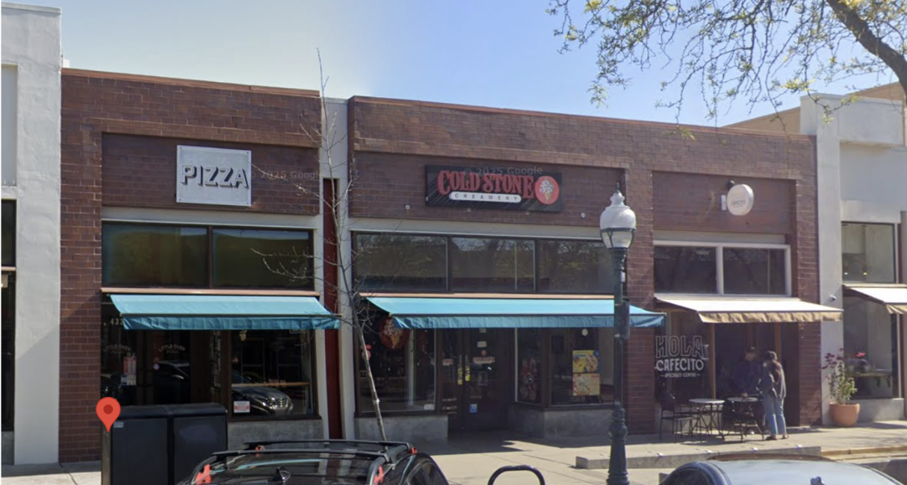

Where Was This Taken?
OSINT mini-challenge · beginner · about 5 minutes
Your mission
The photo below was taken at a real, public location. Use whatever clues it gives you, text, signage, architecture, surroundings, to work out exactly where it is.
The flag is the full street address, written like this:
Underscores instead of spaces, no commas or periods, abbreviate the street direction and street type the way the postal service would (e.g. W for West, St for Street, Ave for Avenue), and use the two-letter state code. Not every address has a direction word, so skip that part if yours doesn't need one.
The photo

Check your flag
Stuck?
Once you know the neighborhood, use Google Maps Street View to find the exact building that matches the photo, then read off its street address.
This page runs entirely in your browser and nothing you type is sent anywhere. Next steps: Trace Labs Search Party CTF, GeoGuessr, and the OSINT rooms on TryHackMe.